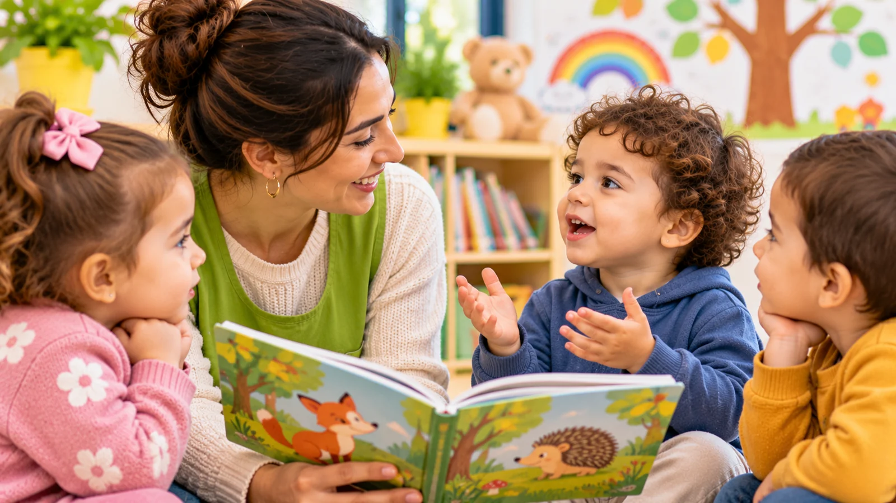

Les premiers mots, les petites phrases, les questions qui se multiplient : le développement du langage est une étape importante de la petite enfance. Il permet à l’enfant de communiquer, d’exprimer ses besoins, de partager ses découvertes et de créer des liens avec son entourage.
Les parents peuvent soutenir cette évolution au fil des moments ordinaires, sans transformer chaque échange en exercice.
Le langage se construit dans les interactions
L’enfant apprend progressivement à communiquer en écoutant les personnes qui l’entourent et en participant aux échanges. Les regards, les gestes, les sons et les mots ont tous leur importance.
Répondre à ses tentatives de communication, même lorsqu’elles ne sont pas encore parfaitement compréhensibles, lui montre que ses initiatives ont du sens. Les moments de jeu partagé offrent aussi de nombreuses occasions d’utiliser le jeu pour apprendre et communiquer.
Cinq habitudes pour encourager le langage
1. Parler pendant les activités quotidiennes
Décrivez simplement ce que vous faites ou ce qu’il fait : « Nous préparons le repas », « Tu mets tes chaussures ». Ces descriptions associent les mots aux situations concrètes et enrichissent son vocabulaire. Elles permettent aussi de découvrir les premières notions en s’amusant, en nommant les couleurs ou en comptant les marches.
2. Écouter et laisser le temps de répondre
Lorsque c’est possible, laissez-le terminer ses phrases lui-même. Quelques secondes de patience lui permettent de chercher un mot, de montrer un objet ou de répondre avec un geste.
3. Lire des histoires ensemble
Les livres illustrés permettent de découvrir du vocabulaire, d’observer des images et de partager un moment calme. Il n’est pas nécessaire de lire tout le texte : commenter une image ou raconter l’histoire avec ses propres mots est déjà intéressant. Découvrez pourquoi il est utile de partager des histoires dès le plus jeune âge.
4. Chanter et jouer avec les sons
Les comptines, les chansons à gestes et les jeux de rimes attirent l’attention sur les sons et le rythme de la langue. Répéter une chanson appréciée peut devenir un rituel agréable.
5. Reformuler sans corriger constamment
Si l’enfant dit « encore gâteau », vous pouvez répondre : « Tu veux encore du gâteau ? ». Il entend ainsi une formulation plus complète sans être mis en difficulté.
Et les écrans ?
Un écran ne remplace pas l’échange avec un adulte. L’Organisation mondiale de la santé ne recommande pas le temps passé devant un écran pour les enfants d’un an et conseille de le limiter à une heure par jour au maximum entre 2 et 4 ans, moins étant préférable. Elle encourage plutôt, pendant les moments calmes, la lecture et les histoires racontées par un adulte.
Plusieurs langues à la maison : une richesse
Dans de nombreuses familles, l’enfant entend plusieurs langues au quotidien : kabyle, arabe, français ou d’autres encore. C’est une richesse. Apprendre plusieurs langues ne provoque pas, à lui seul, de trouble du langage, et le fait de mélanger les langues ne signifie pas que l’enfant est confus.
- Les langues où vous êtes le plus à l’aise : il est généralement conseillé de parler à l’enfant dans la ou les langues que l’on maîtrise le mieux. Vous pouvez ainsi communiquer avec lui spontanément, en partageant naturellement vos mots, vos expressions et votre culture.
- Les langues de la maison, une base solide : elles l’aident ensuite à en apprendre d’autres, y compris à l’école.
- Le mélange des langues est fréquent : un jeune enfant peut utiliser des mots de plusieurs langues dans une même phrase. Avec le temps, l’enfant apprend progressivement à adapter la langue qu’il utilise à son interlocuteur et à la situation. Cette évolution se fait naturellement, à son propre rythme.
- Un vocabulaire à considérer dans l’ensemble de ses langues : un enfant peut connaître certains mots dans une langue et d’autres dans une autre. Pour apprécier ses progrès, c’est l’ensemble de ses mots, toutes langues confondues, qui donne une image juste.
- Les livres et les histoires ont leur place dans chaque langue : lire ou raconter dans la langue de la famille nourrit aussi son langage.
Comme tout enfant, un enfant plurilingue peut néanmoins rencontrer des difficultés de langage qui nécessitent une évaluation. Le plurilinguisme ne doit ni inquiéter à tort, ni conduire à minimiser une difficulté : si vous avez un doute, il mérite d’être discuté, quelle que soit la langue parlée à la maison.
Faut-il s’inquiéter si son enfant parle moins que les autres ?
Les enfants ne développent pas tous le langage au même rythme. Il faut tenir compte de l’ensemble de la communication : compréhension, gestes, regards, interactions et progression dans le temps.
À titre indicatif, et en comptant toutes ses langues, la plupart des enfants disent leur premier mot vers 12 mois. Vers 18 mois, beaucoup essaient de dire au moins trois mots en plus de « maman » et « papa ». Vers 2 ans, la plupart associent deux mots, comme « encore lait ». Vers 3 ans, beaucoup peuvent échanger quelques répliques et se faire comprendre la plupart du temps. Ces repères varient d’un enfant à l’autre. Pour une vue d’ensemble, consultez les grandes étapes du développement entre 15 mois et 3 ans.
Si vous avez une inquiétude, si votre enfant semble ne pas comprendre certaines situations habituelles, répond peu aux sollicitations ou perd des compétences acquises, parlez-en à son pédiatre. Un professionnel pourra évaluer la situation et orienter vers un bilan si nécessaire. Le jeune âge de l’enfant n’est pas, à lui seul, une raison d’attendre : en parler tôt permet souvent d’être rassuré ou, si besoin, accompagné.
En conclusion
Le langage se nourrit des échanges quotidiens. Parler, écouter, lire, chanter et jouer ensemble, dans la ou les langues de la famille, sont autant d’occasions de communiquer.
L’essentiel est de proposer un environnement riche en interactions, chaleureux et adapté au rythme de l’enfant.
L’équipe de l’École Maternelle Lila, Avec vous, pas à pas.
Sources et ressources
- CDC – Tips for Connecting and Communicating
- AAP / HealthyChildren.org – Young Children Learning Multiple Languages: Parent FAQs
- GOV.UK – Development Matters (référentiel britannique de la petite enfance)
- OMS – « To grow up healthy, children need to sit less and play more » (2019)
- CDC – Important Milestones: Your Child By Eighteen Months
- CDC – Important Milestones: Your Child By Two Years
- CDC – Important Milestones: Your Child By Three Years